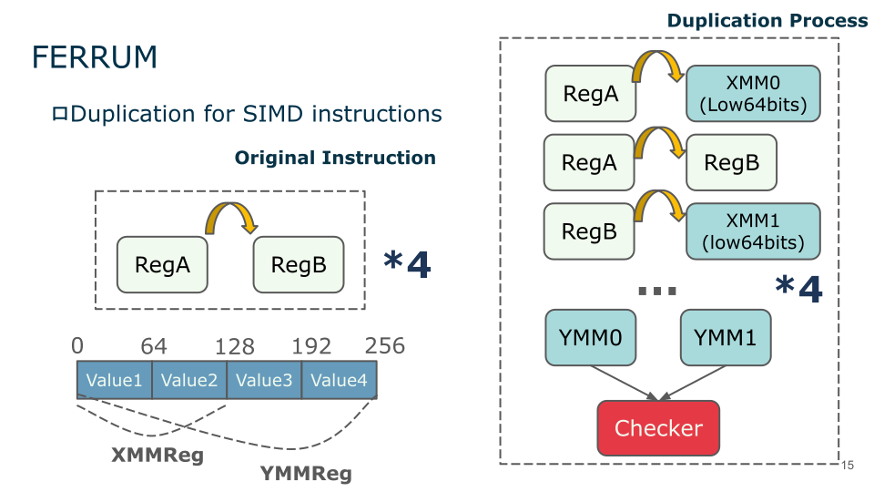

Zhengyang He
About Me
I am a Ph.D. candidate in the Computer Science Department at the University of Iowa. I am a member of IOWA-HPC Group and advised by Guanpeng Li. Before coming to UIowa, I received my Bachelor's degree (Sep.2018-Jun.2022, major: Computer Science) at Jilin Unversity, Changchun.
My research generally lies in High-Performance Computing (HPC) and specifically focuses on:
- Fault Tolerance: HPC Resilience, Software-directed Fault Tolerance
- Compiler Optimization: Program Analysis, Code Transformation, IR Optimization
- Cross-layer Optimization: IR to Low-level Code Transformation, Assembly level Code Optimization
Selected Publications
-
 DSN'24International Conference on Dependable Systems and Networks (DSN), 2024
-
 SC'23
International Conference for High Performance Computing, Networking, Storage and Analysis (SC), 2023
SC'23
International Conference for High Performance Computing, Networking, Storage and Analysis (SC), 2023
Powered by Jekyll and Minimal Light theme.